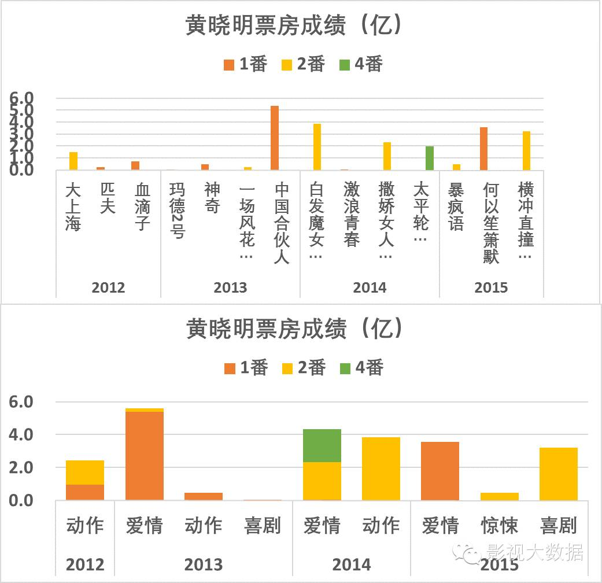
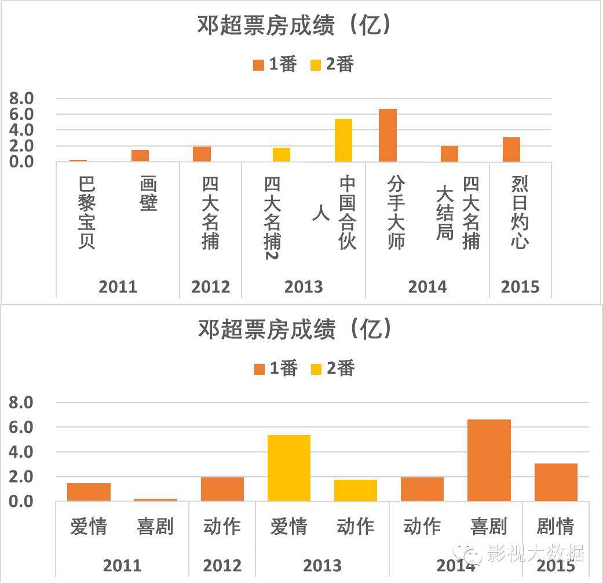

此为临时链接，仅用于文章预览，将在短期内失效
关闭
[干货]数据详解2015票房能力TOP10男演员
2015-12-20
七州夷离堇
影视大数据
井柏然因捉妖记男一号名列2015年电影小生主演票房榜第一名，尽管他谦逊地声称其实男一号是胡巴。
不可否认，捉妖记落到井柏然头上有偶然性，一部捉妖记，更多是冲着暑期档和题材看的，而不是冲着井柏然，高票房并不能代表井柏然自身的票房能力。
但同样不可否认的是，井柏然毕竟是这部电影的男主，而且他在电影市场打拼多年，今年影视双刷，在人气和好感度上都有明显提升，后面捉妖记开成系列电影，怎么都会把井柏然的国民度刷上去了。这位85后电影小生，前途一片光明。
后续，还有《大唐玄奘》等片让黄晓明继续刷逼格。这位最有商业气质和商业价值的男星，不知不觉中却成了最近两年拿奖最多的电影小生。

截止本文发布，陈坤主演的《寻龙诀》单日破两亿，2天累积近4亿，已经明显是大爆预定，如果这个文章晚一个月写，相信2015的TOP10必须有陈坤。
黄渤在2012、2013、2014年连续演出了《泰囧》、《西游降魔篇》和《心花路放》等票房与口碑俱佳的神剧，还用《亲爱的》刷了一把人文思考，2015年底，黄渤又以《寻龙诀》强势归来。
2014年邓超以《分手大师》叫板《变形金刚4》，证明了自己的过人胆略、市场眼光、票房号召力和喜剧天赋。2015年，邓超又用《烈日灼心》诚意奉献出一部叫好又叫座的佳作。岁末还将有邓超自导自演的《恶棍天使》上映，趁着孙俪的《芈月传》大火，趁着烈日的口碑余热，这对夫妻或将联手创造又一个票房奇迹。后续更有大杀器周星驰的《美人鱼》，邓超的2016辉煌可期。

备注：